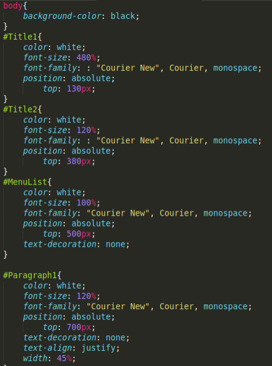

Apakah HTML itu ?
menurut
wikipedia, HTML adalah sebuah bahasa markah yang digunakan untuk membuat sebuah halaman web, menampilkan berbagai informasi di dalam sebuah penjelajah web Internet dan pemformatan hiperteks sederhana yang ditulis dalam berkas format ASCII agar dapat menghasilkan tampilan wujud yang terintegerasi. Dengan kata lain, berkas yang dibuat dalam perangkat lunak pengolah kata dan disimpan dalam format ASCII normal sehingga menjadi halaman web dengan perintah-perintah HTML.
Apakah CSS itu ?
Menurut
Wikipedia Cascading Style Sheet (CSS) merupakan aturan untuk mengatur beberapa komponen dalam sebuah web sehingga akan lebih terstruktur dan seragam. CSS bukan merupakan bahasa pemograman.CSS dapat mengendalikan ukuran gambar, warna bagian tubuh pada teks, warna tabel, ukuran border, warna border, warna hyperlink, warna mouse over, spasi antar paragraf, spasi antar teks, margin kiri, kanan, atas, bawah, dan parameter lainnya. CSS adalah bahasa style sheet yang digunakan untuk mengatur tampilan dokumen. Dengan adanya CSS memungkinkan kita untuk menampilkan halaman yang sama dengan format yang berbeda.

Apakah Javascript itu ?
JavaScript menurut
Wikipedia adalah bahasa pemrograman tingkat tinggi dan dinamis. JavaScript populer di internet dan dapat bekerja di sebagian besar penjelajah web populer seperti Google Chrome, Internet Explorer (IE), Mozilla Firefox, Netscape dan Opera. Kode JavaScript dapat disisipkan dalam halaman web menggunakan tag SCRIPT.